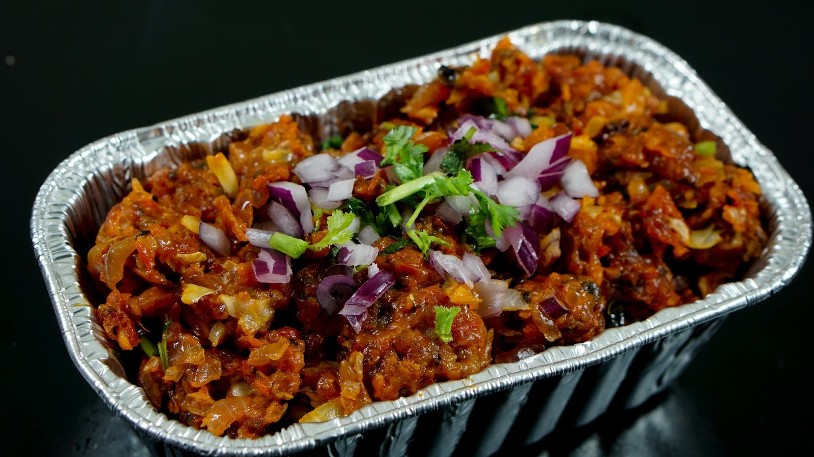

Kaalan

Prep Time:
Cook Time:
Servings:
Calories:
Ingredients
For mushroom pakoda
- 2 cup mushroom (finely chopped)
- 1 cup cabbage (finely chopped)
- ½ onion (finely chopped)
- ¼ tsp turmeric
- 1 tsp chilli powder
- ½ tsp garam masala
- 1 tsp ginger garlic paste
- ½ tsp salt
- ½ cup maida / plain flour
- ¼ cup cornflour
- oil (for frying)
For Sauce
- 2 tbsp oil
- ½ onion (finely chopped)
- 1 tsp ginger garlic paste
- ¼ tsp turmeric
- ½ tsp chilli powder
- ½ tsp garam masala
- ½ tsp coriander powder
- ¼ tsp pepper powder
- ¼ tsp salt
- 2 tbsp tomato sauce
- 2 tbsp vinegar
- 2 tbsp soy sauce
- 2 tbsp cornflour
- 1 cup water
- few curry leaves
- 2 tbsp coriander (finely chopped)
Recipe
- In a large bowl take 2 cups of mushroom, 1 cup of cabbage and ½ onion
- Add ¼ tsp turmeric, 1 tsp chilli powder, ½ tsp garam masala, 1 tsp ginger garlic paste and ½ tsp salt.
- Further, add ½ cup maida and ¼ cup cornflour; Mix well forming a dough.
- Wet your hands with water and scoop a ball sized mushroom pakoda batter.
- Drop the pakoda batter in hot oil keeping the flame on medium.
Stir occasionally, and fry for at least 10 minutes or until the pakoda turns crisp.
- In a large wok, heat 2 tbsp oil. add ½ onion, 1 tsp ginger garlic paste and saute well.
- Keeping the flame on low add ¼ tsp turmeric, ½ tsp chilli powder, ½ tsp garam masala, ½ tsp coriander powder, ¼ tsp pepper powder and ¼ tsp salt.
- Now add 2 tbsp tomato sauce, 2 tbsp vinegar and 2 tbsp soy sauce.
Stir fry on high flame until the sauces are combined well.
- Further, add 1 cup cornflour slurry and mix well. (To prepare cornflour slurry, in a small bowl take 2 tbsp corn flour and 1 cup water. mix well forming a lump-free batter)
Also add few curry leaves and cook until the slurry turns glossy.
- Now add prepared mushroom pakoda and stir well for a minute allowing the sauce to alsorb.
- Finally, add in 2 tbsp coriander and mix well
- Serve your hot kaalan with onion and coriander toppings.